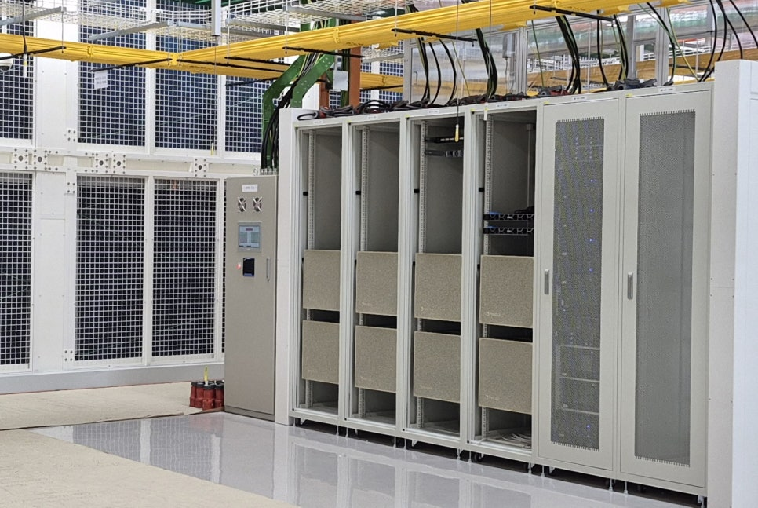
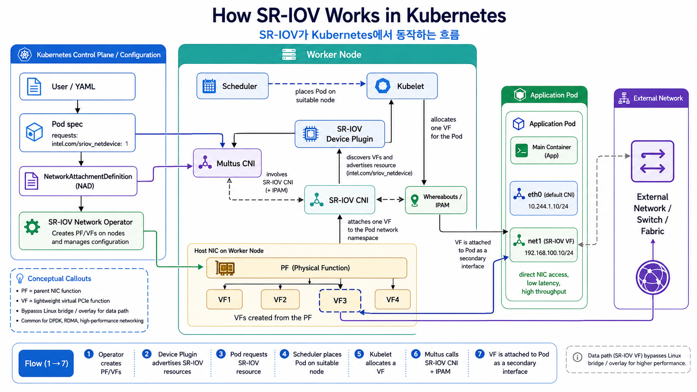
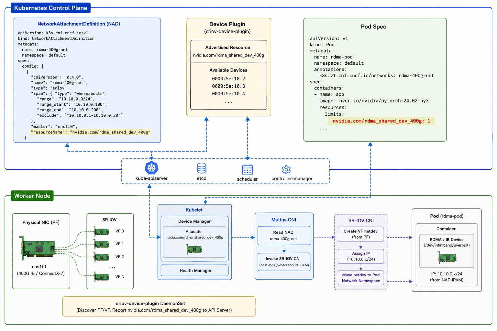

InfiniBand, SR-IOV, RDMA, and Kubernetes GPU networking lessons from an 8-node DGX B200 cluster.

Ping and Pod IP are not enough. RDMA-ready means GPU locality, PF/VF mapping, GUID/LID, Subnet Manager state, and Kubernetes allocation all line up.
| layer | role in the fabric |
|---|---|
| Compute | 8 DGX B200 nodes, 8 B200 GPUs per node |
| Scale-up | NVLink / NVSwitch inside each node |
| Scale-out | ConnectX-7 InfiniBand / Ethernet paths |
| Switching | QM9700 or QM8700-class IB fabric |
| Kubernetes | Cilium + Multus + SR-IOV CNI + Device Plugin |
nvidia.com/gpu can be correct while the RDMA VF lands on the wrong NIC. The job may run, but performance will drift.

DGX B200 / IB view: Pod VF visibility still needs RDMA device, GUID, LID, SM, and mlx5_ib alignment.

Summary: NAD chooses the network. Device Plugin reserves the VF. Kubelet and CNI move it into the Pod.
| check | why it matters |
|---|---|
| GUID | VF identity must be set and visible. |
| LID | Subnet Manager must admit the endpoint. |
| mlx5_ib | RDMA driver binding must be correct. |
| SM state | IB fabric control plane must be healthy. |
| PF/VF mapping | Wrong port mapping creates false positives. |
VF Visible ≠ RDMA Ready
Required path before distributed training
GUID → LID → mlx5_ib → Fabric Membership → Topology Validation
Discovery belongs to the host. Ownership belongs to Multus, SR-IOV CNI, and IPAM.
Root cause: VF lifecycle ownership conflict, not missing hardware.
| state | result |
|---|---|
| Host owns VF | Pod IP assignment fails |
| CNI owns VF | Pod secondary interface works |
Lifecycle rule: High-performance networking includes device lifecycle ownership, not just bandwidth.
GUID · LID · SM · mlx5_ib
VF visible, host unmanaged, CNI-owned move
GPU path · rail · local NIC
Rule: if any layer disagrees, the VF is not ready.